A témakör célja, hogy kiépítsünk és megtanuljunk használni egy Express szervert.
Miután beállítottuk a környezetet elkezdhetünk dolgozni benne.
Írjuk be a server.js-be a következő utasításokat, majd a Visual Studio Code termináljában adjuk ki a következő utasítást: npm run dev. Ennek hatására a szerver mindig lefrissül, ha történik valami változtatás:
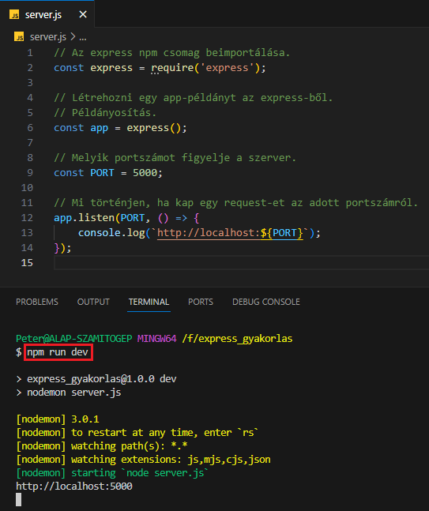
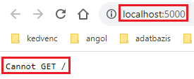
Mi az a (http) request? Egy oldalfrissítés a böngészőben, egy űrlap elküldése, egy e-mail elküldése, egy gombra kattintás stb. Tehát szeretnénk hozzáférni a szerver valamelyik erőforrásához (resource):
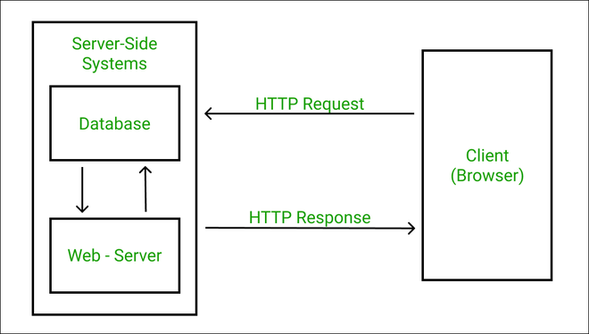
És mi a (http) response? Amit a szerver cserébe visszaküld. Ez lehet egy weboldal html állománya stb., vagy egy hibaüzenet: Cannot GET /, azaz a keresett végpont (endpoint) nem küld vissza semmit.
Mit lehet ilyenkor tenni?
Folytassuk a server.js szerkesztését.
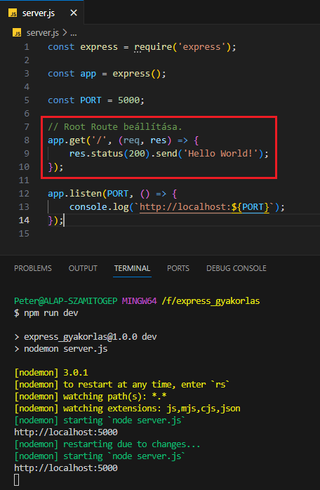
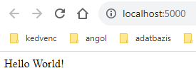
Látható, hogy működik a nodemon és automatikusan frissíti a szervert.
A GET (http request method) feladata a szerver válaszának (response) eljuttatása a böngészőnek a request-re.
A '/' jelöli a végpontot (endpoint), ahová a lekérdezést (request) küldtük.
A válasz (response) általában egy állomány (html, php, asp, ejs, hbs, css stb.), de lehet valamilyen adat is (sztring, számok, listák stb.). Ezt csomagoljuk be a fent megadott arrow function-be. Ebben megadjuk még a http-hibakódot (status(200)) és egy metódussal (send) a választ. Később megismerkedünk ennek a bővített változaival is.
Később, amikor már több route-hoz, azaz végponthoz (endpoint) tartozó kódállománnyal kell dolgoznunk, akkor célszerű azt kiszervezni külső állományokba, mappákba.
A routes mappába tároljuk el az adot végponthoz tartozó CRUD műveleteket.
A tényleges kódmegvalósítása a műveleteknek a controllers mappában történik meg.
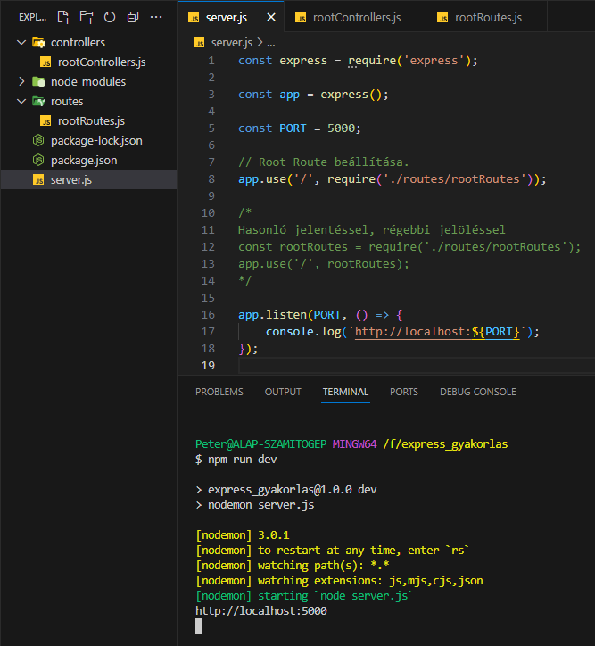
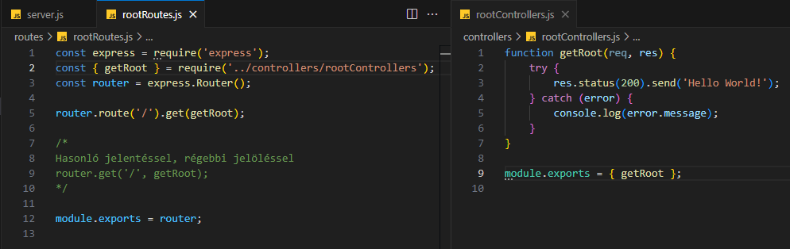
Bár a szerver "dinamikusan" szolgáltat adatokat, weboldalakat, azok stílusát, felépítését esetlegesen bizonyos funkcionalitását "statikus" HTML, CSS és JS állományoktól kapja. Ezeket általában egy public mappában tároljuk el.
Ennek a mappának az eléréséhez szükséges lehet a path node csomag.
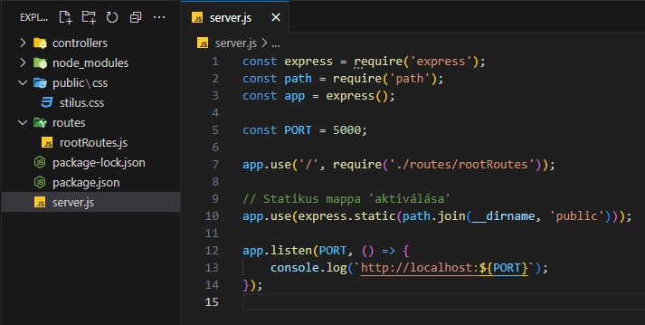
A weblapok szerveroldali feladatainak megoldásához ideális választás lehet az ejs állományok használata. Ezek speciális HTML állományok, amelyekbe JavaScript kódokat írhatunk, amelyek kívülről kapott adatokkal tartalmat tudnak generálni.
Ehhez fel kell telepiteni az ejs npm csomagot.
npm install ejsAz ejs állományokat a views mappában tároljuk el, amely a controllers mappa mellett az MVC fogalom egyik eleme.
A controllers mappában a render utasítással hívjuk meg az ejs állományokat, melyeknek adatokat JavaScript objektumok formájában tudunk átadni.
Állítsuk be a "megjelenítő motor"-t:
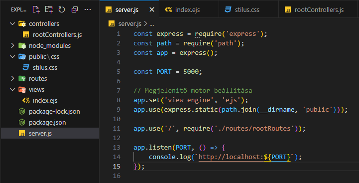
Nézzük az állományokat:
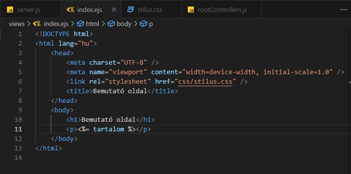
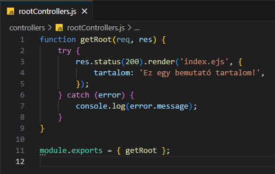
A stilus.css állomány és a végeredmény:
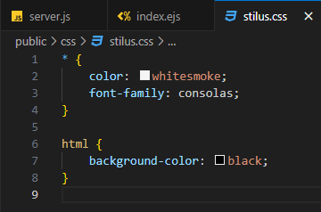
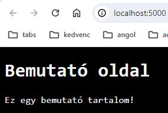
Állítsunk be egy űrlapot az index.js állományban. Van egy kis változtatás a stilus.css-ben is.
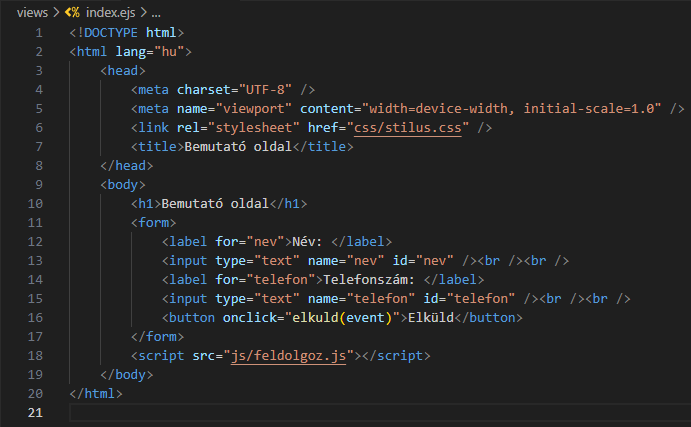
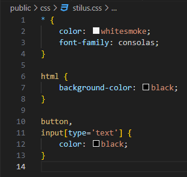
Látható, hogy a form elem kezdő címkéjében nem került beállításra semmi. A feldolgozásért felelős script-et a feldolgoz.js állományban találjuk, amely a public mappában lévő js almappában található. A preventDefault() függvény megakadályozza, hogy elküldés után lefrissüljön az oldal!
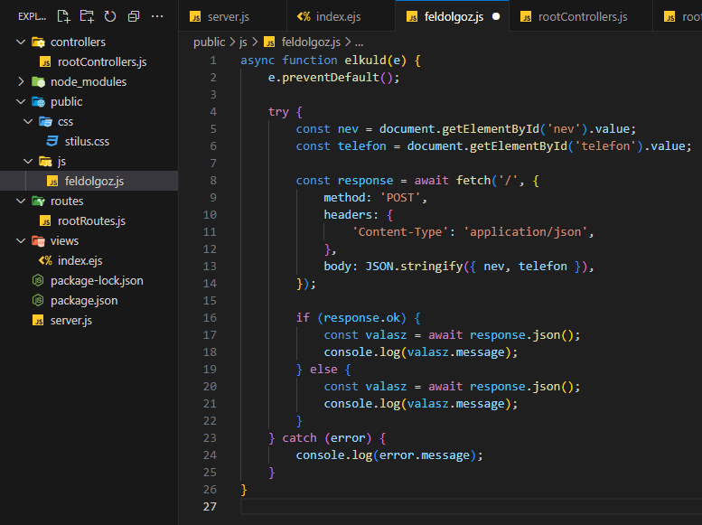
Nézzük az üzleti logikát:
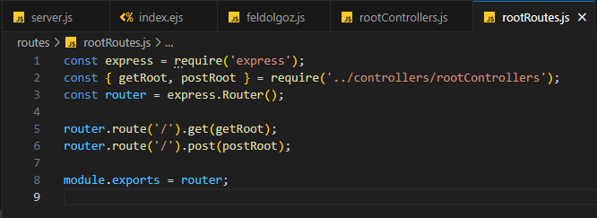
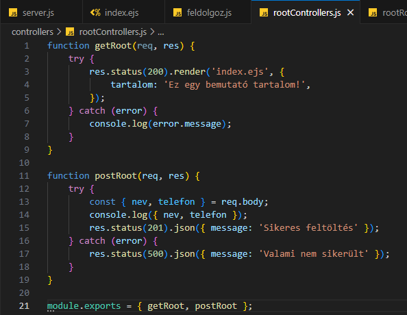
Kattintás után:
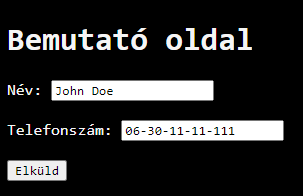
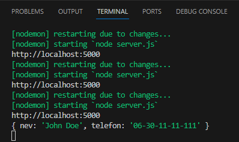
Előfordul, hogy a felhasználó olyan oldalt akar megnyitni, amely nem létezik. Ebben az esetben célszerű egy 404-es oldal megjelenítése, amely átirányít egy másik oldalra.
Hozzunk létre egy 404.ejs nevű állományt.
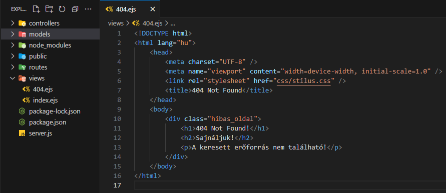
Állítsuk be a server.js állományban a hibás route-ok kezelését! Lássuk az eredményt:
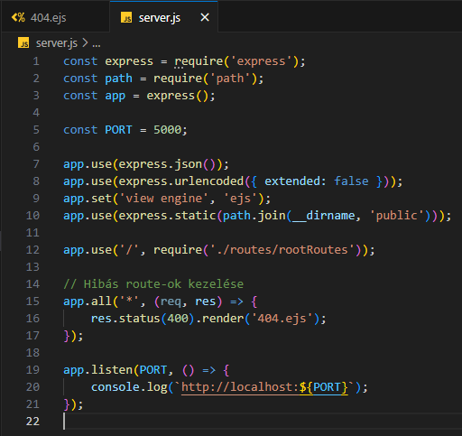
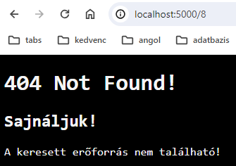